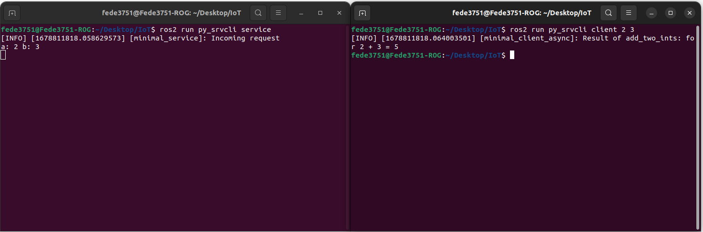

IoT Lab Lecture 3 - 02/04/2024
In this lecture we will see the next big component of the ROS Graph: services.
We will see how we can write a script to create a service server and a service client to exchange data in a more structured
way than topics.
Additionally, we are dedicating a small part to see how you can implement your custom interfaces and write parameters for
your ROS node.
Some exercises are given to test your coding skills with the new knowledge acquired in this lecture.
Let's get started!
Writing services
We have seen how to write and use topics by writing a script. This leaves us only with services and actions to tackle.
Let's now try to write a simple service and client in Python.
We will follow an example just like we did before. But this time from here on this page.
ros2 pkg create --build-type ament_python py_srvcli --dependencies rclpy example_interfaces
This time, we are specifying a dependency that our application needs in order to run the service structure.This command is not required assuming you have everything already installed, but it is a good practice to specify what your package needs in order to run.
If for some reasons you realize that your package has further dependencies after you created it, you can specify them manually by writing in the package.xml file, it should be kinda intuitive how to edit it.
Now create a new file in /src/py_srvcli/py_srvcli called service_member_function.py, this will be the file were we will write our service server.
The code of the node is the following. It is highly recommended to write it line by line instead of copying it, so you can get a good understanding of what we're doing.
from example_interfaces.srv import AddTwoInts
import rclpy
from rclpy.node import Node
class MinimalService(Node):
def __init__(self):
super().__init__('minimal_service')
self.srv = self.create_service(AddTwoInts, 'add_two_ints', self.add_two_ints_callback)
def add_two_ints_callback(self, request, response):
response.sum = request.a + request.b
self.get_logger().info('Incoming request\na: %d b: %d' % (request.a, request.b))
return response
def main():
rclpy.init()
minimal_service = MinimalService()
rclpy.spin(minimal_service)
rclpy.shutdown()
if __name__ == '__main__':
main()
Let's comment the new things we're seeing in this script.The imported libraries are the same as before for what regards ROS.
This time though, we are also importing an example interface called AddTwoInts from the example_interfaces package.
This time, we create a service server using the Node method create_service().
Here, we specify, once again, the message type for the service, the service name, and the callback function.
Things are not so different from writing for a topic.
The callback add_two_ints_callback() takes in input, by default, the request and the response.
Things may get confusing here, but everything may make more sense if we are able to understand how an AddTwoInts message is structured. Do you remember how to do it?
ros2 interface show example_interfaces/srv/AddTwoInts
 This tells us the fields of a request, and those of the response!
This tells us the fields of a request, and those of the response!Now we can go back to our, code, and it should be clear what the following snippet does:
def add_two_ints_callback(self, request, response):
response.sum = request.a + request.b
self.get_logger().info('Incoming request\na: %d b: %d' % (request.a, request.b))
return response
The rest of the code is exactly like what we have seen before!We now need to add an entry point for this service, just like we did before for the two talker and listener nodes.
You should be able to do it by now.
Let's now write the code for our client of the service.
Create a file named client_member_function.py in the src/py_srvcli/py_srvcli folder, and write in it the following code:
import sys
from example_interfaces.srv import AddTwoInts
import rclpy
from rclpy.node import Node
class MinimalClientAsync(Node):
def __init__(self):
super().__init__('minimal_client_async')
self.cli = self.create_client(AddTwoInts, 'add_two_ints')
while not self.cli.wait_for_service(timeout_sec=1.0):
self.get_logger().info('service not available, waiting again...')
self.req = AddTwoInts.Request()
def send_request(self, a, b):
self.req.a = a
self.req.b = b
self.future = self.cli.call_async(self.req)
rclpy.spin_until_future_complete(self, self.future)
return self.future.result()
def main():
rclpy.init()
minimal_client = MinimalClientAsync()
response = minimal_client.send_request(int(sys.argv[1]), int(sys.argv[2]))
minimal_client.get_logger().info(
'Result of add_two_ints: for %d + %d = %d' %
(int(sys.argv[1]), int(sys.argv[2]), response.sum))
minimal_client.destroy_node()
rclpy.shutdown()
if __name__ == '__main__':
main()
Let's comment the most interesting parts of this code.
while not self.cli.wait_for_service(timeout_sec=1.0):
self.get_logger().info('service not available, waiting again...')
self.req = AddTwoInts.Request()
With the first two lines, we are telling our node to wait for the service to be available before continuing with the execution.After that, we instantiate our request message by using the constructor Request() of our AddTwoInts interface.
The other interesting snippet is how the service is called:
def send_request(self, a, b):
self.req.a = a
self.req.b = b
self.future = self.cli.call_async(self.req)
rclpy.spin_until_future_complete(self, self.future)
return self.future.result()
Here, we are configuring our request and then using it in the function call_async().This allows the node to call a service without blocking the rest of the execution of the code. Never use the function call(), unless you are ready to mess with Python Threading.
We then use spin_until_future_complete() to wait for the service to answer and give us a result. Which we then obtain using the future.result() function.
The rest of the code should be kinda self explanatory and not too much different from what we have already seen.
Feel free to ask questions if something is still unclear up to this point.
Linking again and running
Now that we also wrote our client, we are ready to add the entry point also for it. After that, we are finally ready to test our example.Go back to the main folder and build the package again (remember that you may need to check the dependencies with rosdep before being able to build).
Now, after sourcing your package, you should be able to run your service with the following commands.
First, start the service with:
ros2 run py_srvcli service
And then make a request to it with the client node:ros2 run py_srvcli client 2 3
This should output something like this: Exercise 3 - Rainbow Turtle!
We now know how to write services in ROS.
Let's go back to the exercise we did before and complicate things a little bit!
You are here asked to change the script in Exercise 2 as follows:
when the turtle reaches a corner, the color of the line the turtle leaves behind should change!
There is one particular service responsable for the color of the line, try to find it out by tinkering
with all the commands we have seen so far (looking online for more documentation, if you are having problems, is totally fair)!
Some tips may be needed here, as using topics and services together can create lots of problems without knowing how ROS works under the hood.
The most important thing you need to know: you should NEVER call a spin action for a node that is already spinning, that can create problems in the
scheduler of ROS.
If you want to see the result of a service from a node, but that node is already spinning, you may use the function
future.add_done_callback(), which allows you to specify a function which gets executed
when the service has answered your request. You shouldn't need the function in this exercise, but is good to know its existence for the future.
Good luck!
Your solution should look something like this:

So, first of all. The service you want to send data to is /turtle1/set_pen.
You should know by now how to get more info on services and interfaces (ros2 service type [service_name] for the message type, and
ros2 interface show [interface_name] for the interface).
With that being done, let's edit our turtle_publisher.py from Exercise 2 to accommodate the new request.
First of all, we want to include the new interface in our code (we are also importing randint in order to pick a random color).
from turtlesim.srv import SetPen
from random import randint
self.client = self.create_client(SetPen, '/turtle1/set_pen')
self.req = SetPen.Request()
self.req.r = randint(0, 255)
self.req.g = randint(0, 255)
self.req.b = randint(0, 255)
self.req.width = 10
self.req.off = 0
self.future = self.client.call_async(self.req)
self.publisher.publish(msg)
As it was suggested, this time we did not use the function spin_until_future_complete(), mainly for two reasons: first of all, our node is already spinning, and calling the function will mess with the ROS execution of our program, secondly, we don't care about the result of the service, we just care about sending a message to it in order to change the color of the turtle's trail.
Great! Now you can build your package as usual and try to run it!
The full code of the solution is uploaded here: rainbow_client.py
Conclusions and future lectures
This completes everything we needed to see for this lecture.
We're getting really close to be able to fully control a ROS robot.
In the next lecture, we will discuss mainly about ROS Interface and how you can build custom ones.
See you soon!